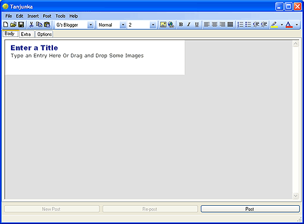
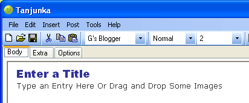
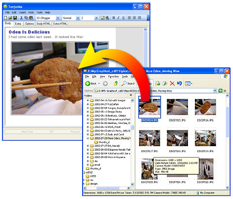
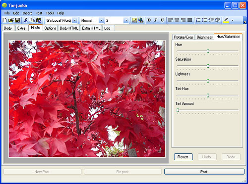
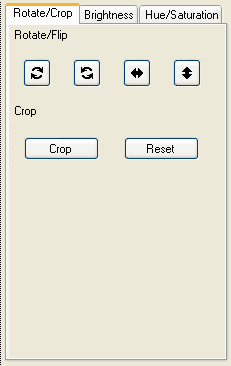
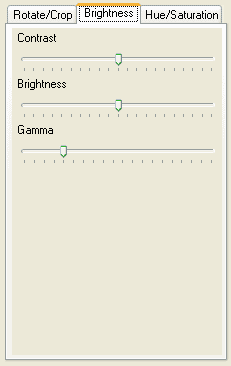
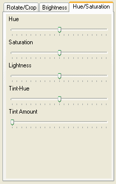
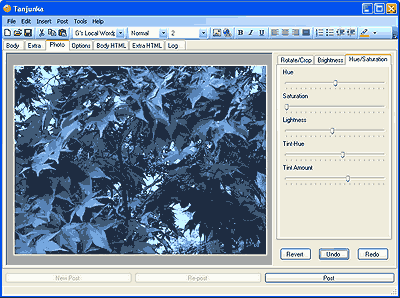

For the latest info please visit the Tanjunka website.
Tanjunka is a program for making it simpler to post entries with photos to your blog. Typically when you want to post a photo you have to manually upload it, often you have to manually prepare it before hand an a separate piece of software before you upload it, both of those steps take time, time that would be better spent being creative and updating your blog.
With Tanjunka you just start typing, drag or paste some images in and it will automatically prepare them for your blog. Pick Post and you're done.
If this is your first time using Tanjunka you need to setup info for your blog.
From the menus pick Post->Services... to bring up the Services form. Click the "Add..." button and select the service that matching your blog software. If a matching service is not listed it might be possible to use a compatible service. Check your blog's instructions for more information. For a particular service follow the corresponding instructions below
You may be able to use this service for movabletype compatible blogs as well.
Fill out the following fields.
Movabletype:
| Name: | a name for you to identify this service with. For example "Gregg's Food Blog" |
| Username: Password: |
The username and password you use to log into your movabletype blog |
| XML-RPC URL: | This is the URL Tanjunka needs to be able to post to your
blog. Go to the login page of your movabletype blog and you'll see an
address similar to this:http://Tanjunka.com/cgi-bin/mt.cgi Copy that address here but change the "mt.cgi" part to "mt-xmlrpc.cgi" In other words if the address is as above then you'd enter http://Tanjunka.com/cgi-bin/mt-xmlrpc.cgi If you are using a movabletype compatible blog service consult the documentation for that service for the correct XML-RPC URL. |
Click the "Update" button below the "Blog:" field. In a few seconds you should see a list of the blogs you have setup. Pick the one you want for this service. If you get an error then most likely your username, password, or XML-RPC URL are incorrect. Double check them. If you were successfully able to select a blog click "OK" and follow the instructions below for setting up your first Post Set
Fill out the following fields
| Name: | a name for you to identify this service with. For example "Yuki's Life Blog" |
| Username: Password: |
The username and password you use to log into Blogger |
Click the "Update" button below the "Blog:" field. In a few seconds you should see a list of the blogs you have setup. Pick the one you want for this service. If you get an error then most likely your username or password are incorrect. Double check them. If you were successfully able to select a blog click "OK" and follow the instructions below for setting up your first Post Set
Fill out the following fields
| Name: | a name for you to identify this service with. For example "JP's Osaka Life" |
| Username: Password: |
The username and password you use to log into your Live Journal |
Click the "Update" button below the "Blog:" field. In a few seconds you should see a list of the blogs you have setup. Pick the one you want for this service. If you get an error then most likely your username or password are incorrect. Double check them. If you were successfully able to select a blog click "OK" and follow the instructions below for setting up your first Post Set
The Blogger API can be used for a blog system that follows the Blogger API. Note: If you are using Blogger USE THE "Blogger" service, not the "Blogger API" service
Fill out the following fields.
| Name: | a name for you to identify this service with. For example "Gregg's Food Blog" |
| Username: Password: |
The username and password you use to log into your movabletype blog |
| XML-RPC URL: | This is the URL Tanjunka needs to be able to post to your blog. Check the documentation for your blog for the correct URL to enter here |
Click the "Update" button below the "Blog:" field. In a few seconds you should see a list of the blogs you have setup. Pick the one you want for this service. If you get an error then most likely your username, password, or XML-RPC URL are incorrect. Double check them. If you were successfully able to select a blog click "OK" and follow the instructions below for setting up your first Post Set
Flickr is NOT a blog service, it is a Photo service. If you are using a blog service that does not support photos directly, for example Blogger or Live Journal, then you can setup Tanjunka to post pictures on Flickr and they will appear on your blog but first you need to setup your blog so select the matching service above.
If you have already setup a service and the "Services" window is still open click "OK" to close it.
Now from the menus pick "Post->Post Sets..." then click "Add..."
A Post Set is a combination of a blog service and a photo service. If you are using a blog service that directly supports photos, for example movabletype, then both services may be the same. If you are using a blog service that does not support photos directly then you can use a different service, for example flickr, to host your images. In either case, for now lets just deal with the blog part, not the photo part.
The only thing you should have to do is enter a name for this post set. For example, "Gregg's Food Blog" then click "OK" then click "Close" to close the Post Set window.
Click where it says "Enter a Title", delete that text and enter a title. For example "My First Post from Tanjunka". Click "Type an Entry Here or Drag and Drop Some Images", delete that text and type an entry like "I'm testing out Tanjunka."
At the bottom of the window click "Post". When the Post Sets window appears make sure the checkbox next to your post set is checked then click "Post To". If everything went well your post should have appeared on your blog. Open your browser and navigate to your blog to see.
Some services take a few moments to update so if you don't see the results immediately wait a few moments and pick refresh in your web browser. If it still doesn't show up see the troubleshooting section
If you are using a service that directly supports photos like movabletype you can skip ahead to Posting your first Photo.
If you are using a service that does not directly support photos visit the flickr website and sign up for an account . Once you have your account setup go into Tanjunka, from the menus pick Post->Services..., click "Add...", choose "Flickr" and click "OK". Fill out the following fields
| Name: | a name for you to identify this service with. For example "Colin's Flickr" |
| E-Mail: Password: |
The e-mail and password you use to log into flickr |
Click "OK" then Click "OK" again to exit the Services window. Bring up the Post Sets window by picking "Post->Post Sets..." from the menus. Click the name of the Post Set you created previously. Where it says "Photo Service:" use the drop down list to select the flickr service you just created. Click "OK" and then "Close" to exit the Post Sets window
Select "File->New" from the menus. If you are asked if you are sure pick "Yes". Enter a title, for example, "My first photo from Tanjunka" and enter some text, for example, "Tanjunka makes posting photos easy!". Now, open Windows Explorer or Double Click on My Documents and navigate to some photos you have. These are often found in the My Pictures folder. Drag and Drop a photo on to Tanjunka. Alternatively, select the photo, pick copy, then go to Tanjunka, click somewhere in your entry and pick "Paste". The photo should appear in Tanjunka. It will automatically be scaled to 400x300 pixels which is the default size for most blogs.
At the bottom of the window click "Post". When the Post Sets window appears make sure the checkbox next to your post set is checked then click "Post To". If everything went well your post with your photo should have appeared on your blog. Open your browser and navigate to your blog to see.
Some services take a few moments to update so if you don't see the results immediately wait a few moments and pick refresh in your web browser. If it still doesn't show up see the troubleshooting section
Here is the main Tanjunka window.

If you've used any Windows software before most of it should be familiar to do so I'm first going to go over the stuff that is specific to Tanjunka.

The first drop down list in the toolbar, the one that says "G's Blogger" in the image above is the list of post sets you have setup in Tanjunka. You can one of them here to change which settings are being used to edit the current post. The most important place this comes up is under the "Options" tab. Different services have different options so before you post if you need any special settings, for example categories or keywords then you should click on the "Options" tab and then select the Post Set for which you want to edit options.
Since Tanjunka supports posting to more than one blog at the same time you can edit the options for every post set you have.
Otherwise, generally you type a title, type some text for your entry and choose post. You can use the icons on the toolbar to help you format your entry. The icons on the toolbar from left to right are as follows:
| New: | Creates a new entry (clears out the old one) |
| Open: | Opens an entry from a saved entry file |
| Save: | Saves the current entry to a file. Note: You can send this entry to someone else using Tanjunka. It will contain the entire entry including images. |
| Cut: | Cuts the selected text to the clipboard |
| Copy: | Copies the selected text to the clipboard |
| Paste: | Pastes the text in the clipboard |
| Post Sets | Sets the Post Set you want to work with. If you have custom styles setup this will also show your entry in the style for that post set. |
| Style: | Sets the currently selected text to a particular style |
| Font Size: | Sets the selected text to a font size. |
| Insert Images: | Brings up a window letting you select one or more images to insert. See Working with Images for other ways to bring images into your post. |
| Hyperlink: | Insert a link if no text is selected. Create a link from the selected text OR edit the link currently at the cursor. |
| Bold: | Toggles Bold |
| Italic: | Toggles Italic |
| Underline: | Toggles Underline |
| Left: | Left justifies the current paragraph |
| Center: | Centers the current paragraph |
| Right: | Right justifies the current paragraph |
| Justify: | Justifies the current paragraph |
| Ordered List: | Converts the current selection to an ordered list |
| Unordered List: | Converts the current selection to an ordered list |
| Outdent: | Unindents the current selection |
| Indent: | Indents the current selection |
| Highlight: | Highlights the current selection to with a color |
| Color: | Sets the text color of the selection. |
Tanjunka's main strength is making it easy to get images into your entries. There are several ways:
Double click on My Computer or My Documents, find your pictures. If they are not visible as Thumbnails choose Thumbnails from the view menu. Then drag and drop an image into your Tanjunka entry

Tanjunka will automatically scale and recompress the image for your blog.
Instead of dragging and dropping like above you can select the files in Windows Explorer, pick copy, switch to Tanjunka, click in the entry and pick paste.
Clicking the image icon on the toolbar or picking Insert->Image... from the menus you can select multiple images to insert. Again, Tanjunka will automatically prepare them for your blog.
If you select some HTML from a browser window and paste it into Tanjunka it will copy the embedded images and prepare them for your blog
If you have graphic data in the clipboard and paste it into Tanjunka, Tanjunka will automatically create a new image ready to upload to your blog. To see some examples of this
1) If you have a graphic program like Photoshop. Load it, load a picture, select part of the pictures, Copy, Switch to Tanjunka, click in the entry area, paste.
2) Press the "Print Screen" key on your keyboard to take screenshot. Go to Tanjunka, click in the entry area, paste.
Double click an image to edit it. The photo editing tab will appear.

Along the right side are controls for editing your image. Note that Tanjunka only works on copies of your images, it does not edit the originals. Also the changes are never permanent. You can always revert back to the original image. When you post your entry Tanjunka will generate an image based on your edits and send that image to your blog or photo service.
The first photo editing tab allows you to rotate, flip and crop your image. To crop, select the area of the image you want to keep by dragging a rectangle in the image on the left. Then click the "Crop" button. If you want to remove all cropping and go back to the entire original image you can click the "Reset" button. |
Contrast: Left lowers the contrast, right increases the contast Brightness: Left lowers the brightness toward black, right raises the brightness toward white Gamma is also a kind of contrast setting. Experiment with it |
Hue: Rotates the hues of the image around the color wheel. Red > Yellow -> Green -> Blue -> Purple -> Red. (-180 to 180) Saturation: Saturates or de-saturates the colors in your image. Drag all the way to the left to remove all color or to the right to exaggerate the colors. Lightness: Same as the brightness setting on the previous tab. Tint-Hue: Tints the image a setable amount in a certain color. Tint-Amount: Adjust the amount of colored Tint to apply to the image. See Below |
The most common use for tint is to take an image and make it all one color. To do this, set the Saturation to 0 (drag the setting all the way to the left). The raise the Tint-Amount. All the way to the right will give it an extremely brightly colored tint. Set it to the amount you want. Then drag the Tint-Hue to the color you want. You can then adjust the Lightness setting for a darker or lighter image.

Undo and Redo should be pretty self explanatory. Revert sets the entire picture back to the original image with no cropping and no color adjustments.
Note: Undo and Redo are remembered for each photo. In other words, if you adjust the hue of image1 then adjust the saturation of image2, then go back to editing image1 if you click undo you'll undo the editing of image1. Image2 will not be effected.
A list of options and things to be aware of for each service
| Name: | a name for you to identify this service with. For example "Gregg's Food Blog" |
| Username: Password: |
The username and password you use to log into your movabletype blog |
| Image Path: | Added to upload path. Example "images". This path is passed to moveabletype to help it decide where to store your image. |
| XML-RPC URL: | This is the URL Tanjunka needs to be able to post to your
blog. Go to the login page of your movabletype blog and you'll see an
address similar to this:http://Tanjunka.com/cgi-bin/mt.cgi Copy that address here but change the "mt.cgi" part to "mt-xmlrpc.cgi" In other words if the address is as above then you'd enter http://Tanjunka.com/cgi-bin/mt-xmlrpc.cgi If you are using a movabletype compatible blog service consult the documentation for that service for the correct XML-RPC URL. |
| Blog: | The Blog you have this service setup to post to. Click the Update button to refresh the list. |
| Publish | The default publish value for new entries. |
| Allow Comments: | The default allow comment value for new entries. |
| Allow Trackback: | The default allow trackback value for new entries. |
| Encoding: | The character encoding to use for posts. Apparently movabletype does not support anything other than Unicode UTF-8 for posting through XML-RPC. So, if you are using movabletype leave this as Unicode UTF-8. Some other blog systems that support the movabletype API might be able to support other character sets. |
| Use Style Sheet | Check this box to use a custom style sheet. For each blog you can setup a custom CSS style sheet so that Tanjunka will display your new entry exactly as you would see it on your blog as you enter it. See Using Custom Style Sheets for more information. |
| CSS File: | This is the path to your custom CSS Style Sheet. Click the "Browse..." button to select it. |
| Use Custom Forms: | You can even go so far as to create custom html forms for each blog.
This would allow you to edit inside Tanjunka as though you were editing
directly on your blog including your banner, your side bars, and other
features of your blog. NOTE: It's still an experimental option and although you can get tio work with a lot of effort it is essentially not yet implemented. |
| Body Form: More Form: |
The custom forms for the body and extra tabs of the main Tanjunka display for this blog. |
| Name: | a name for you to identify this service with. For example "Jill's Wedding Blog" |
| Username: Password: |
The username and password you use to log into blogger |
| Blog: | The Blog you have this service setup to post to. Click the Update button to refresh the list. |
| Use Style Sheet | Check this box to use a custom style sheet. For each blog you can setup a custom CSS style sheet so that Tanjunka will display your new entry exactly as you would see it on your blog as you enter it. See Using Custom Style Sheets for more information. |
| CSS File: | This is the path to your custom CSS Style Sheet. Click the "Browse..." button to select it. |
| Use Custom Forms: | You can even go so far as to create custom html forms for each blog.
This would allow you to edit inside Tanjunka as though you were editing
directly on your blog including your banner, your side bars, and other
features of your blog. NOTE: It's still an experimental option and although you can get tio work with a lot of effort it is essentially not yet implemented. |
| Body Form: More Form: |
The custom forms for the body and extra tabs of the main Tanjunka display for this blog. |
| Name: | a name for you to identify this service with. For example "John's Journal" |
| Username: Password: |
The username and password you use to log into Live Journal |
| Blog: | The Blog you have this service setup to post to. Click the Update button to refresh the list. |
| Publish | The default publish value for new entries. |
| Use Style Sheet | Check this box to use a custom style sheet. For each blog you can setup a custom CSS style sheet so that Tanjunka will display your new entry exactly as you would see it on your blog as you enter it. See Using Custom Style Sheets for more information. |
| CSS File: | This is the path to your custom CSS Style Sheet. Click the "Browse..." button to select it. |
| Use Custom Forms: | You can even go so far as to create custom html forms for each blog.
This would allow you to edit inside Tanjunka as though you were editing
directly on your blog including your banner, your side bars, and other
features of your blog. NOTE: It's still an experimental option and although you can get tio work with a lot of effort it is essentially not yet implemented. |
| Body Form: More Form: |
The custom forms for the body and extra tabs of the main Tanjunka display for this blog. |
The Blogger API can be used for a blog system that follows the Blogger API. Note: If you are using Blogger USE THE "Blogger" service, not the "Blogger API" service
| Name: | a name for you to identify this service with. For example "Old Richard's Old Blog" |
| Username: Password: |
The username and password you use to log into your Blogger API compatible blog |
| XML-RPC URL: | This is the URL Tanjunka needs to be able to post to your blog. Consult the documentation for that service for the correct XML-RPC URL. |
| Blog: | The Blog you have this service setup to post to. Click the Update button to refresh the list. |
| Publish | The default publish value for new entries. |
| Encoding: | The character encoding to use for posts. Consult your blog software for information on which character encodings it supports. |
| Use Style Sheet | Check this box to use a custom style sheet. For each blog you can setup a custom CSS style sheet so that Tanjunka will display your new entry exactly as you would see it on your blog as you enter it. See Using Custom Style Sheets for more information. |
| CSS File: | This is the path to your custom CSS Style Sheet. Click the "Browse..." button to select it. |
| Use Custom Forms: | You can even go so far as to create custom html forms for each blog.
This would allow you to edit inside Tanjunka as though you were editing
directly on your blog including your banner, your side bars, and other
features of your blog. NOTE: It's still an experimental option and although you can get tio work with a lot of effort it is essentially not yet implemented. |
| Body Form: More Form: |
The custom forms for the body and extra tabs of the main Tanjunka display for this blog. |
| Name: | a name for you to identify this service with. For example "Hiroko's Photos" |
| E-Mail: Password: |
The e-mail address and password you use to log into Flickr |
| Ctrl-A | select all |
| Ctrl-B | toggle bold |
| Ctrl-C | copy |
| Ctrl-F | Find |
| Ctrl-I | toggle italic |
| Ctrl-K | edit/create hyperlink |
| Ctrl-U | toggle underline |
| Ctrl-V | Paste |
| Ctrl-X | Cut |
| Ctrl-Y | Redo |
| Ctrl-Z | Undo |
You can setup a custom style sheet for any blog service you have configured. In the settings area check the "Use Custom Style Sheet" checkbox, then click "Browse..." and find your style sheet (CSS file). If you do this you can make Tanjunka show your post in the same fonts, sizes, colors and other style settings as your individual blogs.
You will probably have to edit your CSS file. The details of CSS or beyond the scope of this document. Tanjunka's default entry display uses the following styles.
Change your style sheet to match.
Trouble Posting An Entry:
If you get the error "could not post entry to [____]: fault response contains string value where integer expected [fault response: struct mapped to type Fault : member faultCode mapped to type Int32]" it's most likely that you have your Encoding set to something other than "Unicode (UTF-8)". Check the settings for the service you are having problems with and try setting the encoding to "Unicode (UTF-8)".
If you get any other error while posting the first thing to check is your name, password and XML-RPC path if applicable. If those seem correct click the "update" button in the settings for the service you are having trouble with. If any error appears again, double check your username, password and XML-RPC path. If you are behind a proxy make sure you setup your proxy. The "HTTP:" is required as is the port. Example proxy:
http://proxy.mycompany.com:8080